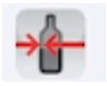
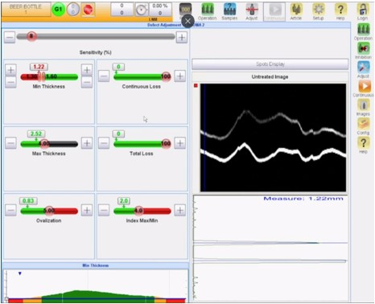
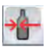
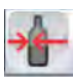

General Setup - Tiama - UTM Chroma
INS-03-042
Revised: 2021-09-30
Purpose and Application
Purpose
To define a work instruction for proper setup of the UTM Chroma inspection device on MX4 Machines.
Application
This work instruction applies to all O-I manufacturing facilities.
Safety
Observe O-I standard safety requirements and procedures defined by the Global Environmental Health & Safety (EH&S) organization, as well as all applicable local, regional, and national requirements. Safety equipment and instructions specific to the completion of this work instruction are detailed in the Instructions Section.
Instructions
-
To create a setup sample, perform the following steps:
-
The setup container must have one indicator line for each required probe
position.
- Attach pieces of tape to the container and draw lines at the exact inspection heights.
- Position the tape so the lines marking the inspection heights can be centered. This will allow the laser beam to be visible on the tape above and below each line during probe alignment.

-
The setup container must have one indicator line for each required probe
position.
-
To set up the UTM Chroma probe(s), perform the following steps:
-
Click on the Login
 button. A dialogue box
opens to let you enter the password.
button. A dialogue box
opens to let you enter the password.
-
Enter the Password and click OK. The Log out
 button is displayed.
button is displayed.

-
Jog a setup container into the station where the UTM Chroma probes are
installed (typically station . The MX4 should be in Manual mode.

-
OPTICAL SETTINGS Click on Detections/UTM Chroma
 to calibrate and
then the Settings/Optical Settings
 button.
button.

-
MECHANICAL SETTINGS Use the height adjustment lever to position the
axis of each probe at the height of the required measurement.
Figure 1. UTM CHROMA 
-
Adjust the position of each probe so they are perpendicular to the glass
surface.
- Loosen the 2 screws [1].
- Tilt the head (A) so that the beam is perpendicular (5) to the article wall.
Figure 2. UTM CHROMA 
-
Adjust the position of each probe horizontally (direction A) so they are
centered on the article wall.
- Loosen the adjusting screw [2].
- Turn the adjustment button [1] to the left or right.

-
Adjust the Brightness value to have 2 clear white lines.
- Enter a high value (around 50) for dark glass.
- Enter an average value (around 30) for standard inspections.
- Enter a low value (around 10) for clear glass.

-
Resize the optical screen image.
- Click the button to display the optical screen in a full window mode.
- Drag both (top and bottom) blue lines close to the white horizontal lines to resize the UTM optical screen.

-
Click on the Login
-
To set the defect threshold values, perform the following steps
-
Select Settings
and then
Defect Adjustments
to display the Defect
Settings screen.
- The MX4 should be in Manual mode.
- Rotate the article by pressing the ON button
 .
.

-
Adjust the Sensitivity.
- Set the sensitivity between 10 to 15% as a base starting point.
- This value represents the detection value. A peak below this value will not be identified as a thickness measurement.
- If the noise signal is too high (similar to the peak signal), try to recalibrate the mechanical system.

-
Set the “Total Losses” threshold in increments of 1%. The measured
value for the article being processed appears in the frame above the gauge.
- Total losses include continuous and non- continuous dots (pixels) of each signal line.

-
Set the “Continuous spot loss” threshold in increments of 1%. The
measured value for the article being processed appears in the frame above the
gauge.
- Continuous spot loss is the maximum continuous dots loss admissible on a signal line.

-
Select Settings
and then
Defect Adjustments
to display the Defect
Settings screen.
-
To perform a thickness calibration using a sample container, perform the following
steps:
-
Adjusting the UTM Chroma probes Click the UTM
Chroma button , then
the Settings button and then the Advanced
Settings screen to display the Thickness Calibration screen.
- Set the “Isolated points filter size” [1] and “ Thickness filter size” [2] to 3.0 as a base starting point.
- Set the “Offset” [3] to 0.00 as a base starting point.
- Deactivate (gray status) the algorithms [4] not needed for the actual UTM Chroma head.


-
Select Settings
 and then
Defect Settings
to display the Defect
Settings screen.
and then
Defect Settings
to display the Defect
Settings screen.
-
Run a challenge sample container through the machine several times and record
the thickness reading. It is recommended to calculate the average of at least 5
readings.

-
If the reading value is not equal to the actual value measured in the
lab, select the Settings/Advance Settings screen
to display the
Thickness Calibration screen.
- Modify the Offset value accordingly to match with the actual thickness value of the challenge sample container.

-
Adjusting the UTM Chroma probes Click the UTM
Chroma button , then
the Settings button and then the Advanced
Settings screen to display the Thickness Calibration screen.
-
To rename the UTM Chroma heads, perform the following steps:
-
Go to the Help menu and select the Customized
translation option.

-
Go to the Help menu and select the Customized
translation option.
Required Training
Before performing this work instruction, applicable personnel must be trained by an authorized trainer on the required training contents listed in this document.
Equipment
Allen wrench set
Wrench set
Screwdriver set
References
Document Classification
- Efficiency and Throughput
- Quality
Fundamentals
- INS-308
Approval
|
Region |
Representative |
|---|---|
|
Europe |
Robert Kurpiel, Bruno Laumier, Stefano Lucidi, Hans de Willigen |
|
Latin America |
Marlon Bravo |
|
Mexico |
Yigael Hernandez |
|
North America |
David Gladwin |
|
Global Operations |
Bob Morin |
Revision History
| 2021-09-30 |
Approved by Bob Morin, Global Inspection Discipline Leader |
|
Original Issue |